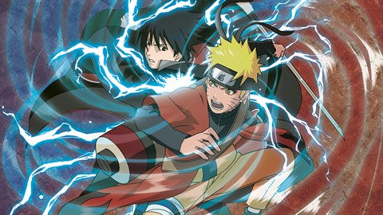
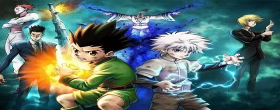
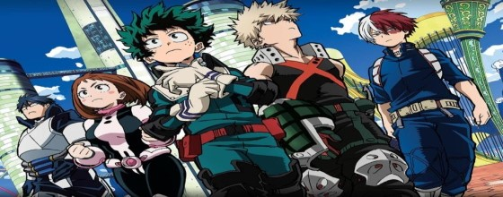

One Piece conta as aventuras de Monkey D. Luffy, um jovem cujo corpo ganhou as propriedades de borracha após ter comido uma fruta do diabo acidentalmente. Com sua tripulação, os Piratas do Chapéu de Palha, Luffy explora a Grand Line em busca do tesouro mais procurado do mundo, o "One Piece", a fim de se tornar o próximo Rei dos Piratas.
Naruto conta a história de Naruto Uzumaki, um jovem ninja que constantemente procura por reconhecimento e sonha em se tornar Hokage, o ninja líder de sua vila.
A história tem como protagonista Gon Freecss, um menino de 12 anos que quer encontrar o seu pai a todo o custo, então ele decide se tornar um "Hunter", assim como ele, e de alguma forma encontrar o seu paradeiro. À medida que a história avança, Gon faz amizade com outros três Hunters aspirantes: Leorio, Kurapika e Killua, que o acompanham em suas aventuras.

A história gira ao entorno de Tanjirō Kamado, um garoto bondoso e inteligente que vive junto com sua mãe e seus irmãos. Certo dia, ao voltar para casa, Tanjiro descobre que toda sua família foi atacada por onis, sendo que uma de suas irmãs, Nezuko, é a única que sobreviveu ao ataque. Nezuko então passa a ser um oni. Tanjirō decide então se tornar um caçador de onis, e com a ajuda de Nezuko, passa a sair em jornadas pelo Japão a fim de impedir que a mesma tragédia que afetou sua família aconteça com outras pessoas, enquanto que ele busca uma maneira de tornar Nezuko humana novamente.
A história segue Izuku Midoriya, um menino que nasceu sem individualidade em mundo que é normal tê-las, mas mesmo assim sonha em se tornar um super-herói. Após ajudar o maior herói do mundo, que fica fraco depois de um tempo por causa de um ferimento, a capturar um vilão, este compartilha os seus poderes, o One for All, com Izuku depois de reconhecer o seu valor e o ajuda a se matricular em uma escola para heróis em formação.